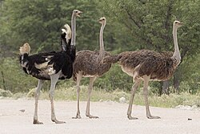

Common Ostrich
Struthio camelus [1]

Scientific Classification
| Rank | Taxon |
|---|---|
| Kingdom | Animalia |
| Phylum | Chordata |
| Class | Aves |
| Order | Struthioniformes |
| Family | Struthionidae |
| Genus | Struthio |
| Species | S. camelus [1] |
Ecology & Profile
- Zoo Exhibit
- African Adventure [1]
- Conservation Status
- Least Concern [1]
- Habitat
- Savannas and open woodlands [1].